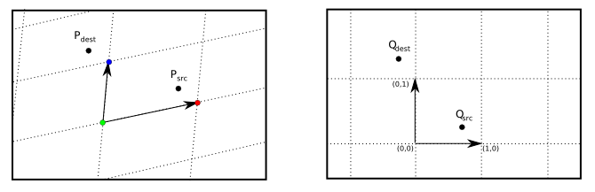

Wallpaper patterns - the code
Here we explain some key aspects behind the code. The full code for the applet can be found at GitHub - Wallpaper.
Basic structure
The Java application is made of a number of interacting classes, loosly following the Model-View-Controller pattern.
- View
-
UI related elements.
- Wallpaper the main UI class with most common controls.
- WallpaperFramed extension above, adding a menu bar.
- Controller
-
The glue between the model and view.
- Controller the main controller
- AnimationController controller for animation related tasks
- FileController controller for loading and saving files.
- Model
-
Contains the current state of the application
- DrawableRegion Contains a pair of images: the source image and the destination image, calculated by coping pixels from the source according to the wallpaer pattern.
- FundamentalDomain a set of vertices defining the lattice.
- TessRule an abstract base class describing the type of pattern. There are several sub-classes for particular classes of pattern, and one sub-class instance for each pattern.
- AnimationPath an abstract base class describing a type of animation.

The key methods used for creating patterns are:
TessRule.replicate(DrawableRegion dr,FundamentalDomain fd)that calculated the full destination image, using the specific type of pattern, and the FundamentalDomain defining the lattice. The base class provides a default implementation that calls thefunmethod whenever a destination pixel needs to be calculated. Conceptually it loops through each pixel in the destination, finds the source pixel and copies the colour from the source to the destination. The actual implementation, optomised this copying blocks of pixels to fill the destination.TessRule.fun(int[] in,int[] out,int det)takes the coordinates of a destination pixel and calculates the coordinated of the source pixel which will be copied.Controller.applyTeselation()the main methods called when a tesselation needs to be calculated. The controller has fields for the DrawableRegion, FundamentalDomain and TessRule and this method callsTessRule.replicate
Every subclass of TessRule implements its own implementation of the fun method.
Some like the classes for frieze groups and cyclic groups have custom versions
of the replicate method.

TessRules and the fun method
Each symmetry group is represented by a member of the class TessRule which defines the type of pattern and a set of vectors which specify a coordinate frame. The origin of this frame is the green dot and the two coordinate axis are the lines from the green dot to the red and blue dots. This frame defines at lattice which tessellate the the plane by parallelograms, and the image inside each parallelogram will be the same.

First consider the case of the simplest group P1. To calculate the tessellated image for each point in the image Pdest we wish to find
the point Psrc inside the fundamental domain. To achieve this first transform to coordinates in the new frame to
give the point Qdest. As the image in each
parallelogram is identical we can take coordinates in this frame mod 1 giving the point Qsrc. Finally
transform back to image coordinates giving the Psrc. Finally the colour of the pixel at P
For other transformations a little more work is needed. Consider Pmm which is obtained by reflection in two lines at right angles. In the transformed coordinates this is in the lines x=0.5 and y=0.5. Let Qmod be the point after the modulus is taken which has coordinates (xmod,ymod) with xmod and ymod in the range 0 to 1. The y-coordinates of Qsrc, xsrc is calculate as follow:
- if xmod < 0.5, xsrc = xmod,
- if xmod > 0.5, xsrc = 1 - xmod.
- if ymod < 0.5, ysrc = ymod,
- if ymod > 0.5, ysrc = 1 - ymod.
Each other group will have similar condition.
In the above the transformation we have used floating point coordinates. The above calculations can be repeated using purely integer arithmetic, this results in faster algorithms and eliminates any rounding problems. Let O be the position of the green dot and u and v be the two vectors of the frame. Let M be the matrix with u and v as columns, this has the determinant det = (ux * vy - uy vx). . Now the transformation from a point q in the Q-frame to a point p the P-frame is given by p=O + Mq, and the inverse transformation is q = M-1(p-O). The inverse matrix M-1 is calculated as 1/det (vy, -vx;-uy ux). If we multiply through by the determinant giving q' = det M-1(p-O), observe that q' will have integer coordinates. The above method can be followed through using this scaled frame, with the frame vectors being (det,0) and (0,det).
int Qdest[] = new int[2];
int Qsrc[] = new int[2];
int det = ux * vy - uy * vx;
for(i=0;i<width;++i)
for(j=0;j<height;++j) {
// translate
int x = i - x0;
int y = j - y0;
// calculate Q coodinates of dest
Qdest[0] = vy * x - vx * y;
Qdest[1] = -uy * x + ux * y;
// apply specific transformation
fun(Qdest,Qsrc,det);
// calculate Psrc
int srcX = x0 + (Qsrc[0] * ux + Qsrc[1] * vx ) / det;
int srcY = y0 + (Qsrc[0] * uy + Qsrc[1] * vy ) / det;
// copy src pixel to dest pixel
pixels[i*width+j] = pixels[srcX*width+srcY];
}
// An example of transformation function for group Pmm
void fun(int dest[2],int src[2],int det) {
// find modulus
int a = dest[0] % det; if(a<0) a+= det;
int b = dest[1] % det; if(b<0) b+= det;
// find coordinates of point in fundamental domain
if(a>det/2) a = det - a;
if(b>det/2) b = det - b;
}
Hexagonal patterns
The five patterns with 3 or 6 fold rotations require the more complex calculations.
- Let $det$ be the length of the u vector.
- First calculate coordinates $\mathbf{in}=(X, Y)$ with respect to the u-v frame.
- Find the "integer"" and "fractional" parts of the input: $X=a + \frac{\alpha}{det}, Y =b + \frac{\beta}{det}$, where $a,\alpha, b,\beta$ are integers and $0 \leq \alpha, \beta < det$. So $\alpha = X \bmod det$, $a = \lfloor \frac{X}{det}\rfloor $, $\beta = Y \bmod det$, $b = \lfloor \frac{Y}{det}\rfloor $.
- Find $index = (a + b ) \mod 3$, all points with the same index will have the same source point.
- Next factor out the 3-fold rotation around the center of the tile. This can be found by simple addition with 5 cases depending on the index and $\alpha$ and $\beta$. $$\mathbf{out} = \begin{cases} (\alpha,\beta) & index=0 \\ (\beta - \alpha, det - \alpha) & index=1, \alpha < \beta \\ (det - \beta, \alpha - \beta) & index=1, \alpha \ge \beta \\ (det - \beta, \alpha - \beta + det) & index=2, \alpha < \beta \\ (\beta - \alpha + det, det - \alpha) & index=2, \alpha \ge \beta \end{cases}$$
- Further symmetry options depending on the type of pattern

In the above figure, we wish to rotate the point $\mathbf{in}$ around the center of the tile $\mathbf{p}$. Orange number are the index of each parallelogram The input point is $$\mathbf{in} = \left(a + \frac{\alpha}{det}\right) \mathbf{u} + \left(b + \frac{\beta}{det}\right) \mathbf{v}$$
Here $a = 1, b=0, index=1$ and $\alpha < \beta$. Rotating 120° clockwise around O send $\mathbf{u}\to\mathbf{w}=-\mathbf{u}-\mathbf{v}$ and $\mathbf{v}\to\mathbf{u}$ so the rotated points is $$\mathbf{rot}=\left(1 + \frac{\alpha}{det}\right) (-\mathbf{u}-\mathbf{v}) + \left( \frac{\beta}{det}\right) \mathbf{u} = \left(-1-\frac{\alpha}{det}+\frac{\beta}{det}\right)\mathbf{u} + \left(-1-\frac{\alpha}{det}\right)\mathbf{v} $$ Translating by $\mathbf{u}+2\mathbf{v}$ gives the final output point $$ \mathbf{out}=\left(-\frac{\alpha}{det}+\frac{\beta}{det}\right)\mathbf{u} + \left(1-\frac{\alpha}{det}\right)\mathbf{v} $$ With coordinated $(-\alpha+\beta, det-\alpha)$ in the u-v frame.
Hence the calculation of the output coordinates can be done in integer arithmetic, the only time floating point is used is when calculating the vector $\mathbf{v}$ which only needs to be done once.
Using lattice points
The calculation can be sped up by using the lattice structure of the tessellation. First find the bounding box enclosing one parallelogram in the lattice, and calculate the full pattern in that rectangle. The find all the lattice points in the region to be drawn. For each lattice point copy the pixels in the rectangle to a new rectangle based on the lattice point. This will result in a certain amount of overlap, but this does not affect the speed as coping arrays can be achieve very quickly.
Speeds of integer and floating point
Using integer arithmetic offers considerable speed advantages over floating point in the inner loops. Compare these two methods for finding division rounded down (rather than to 0 as in the language spec for /):
int a = (int) Math.floor((float) in[0]/det); int b = (int) Math.floor((float) in[1]/det);and
int a = (in[0]<0 ? (in[0]+1)/det -1 : in[0]/det); int b = (in[1]<0 ? (in[1]+1)/det -1 : in[1]/det);Changing from the first to the second resulted in a four fold speed improvement over the whole algorithm. These two lines represented 67% of the entire speed of the algorithm.
Copyright R Morris 2025